Explore Saint Petersburg
A Brief History
Saint Petersburg was founded in 1703 as Peter the Great's window on the Baltic, with canals and baroque palaces planned on marshland. Hermitage collections, fortress cathedrals, and Nevsky Prospekt record imperial capital culture until the Soviet era. Peterhof fountains and canal boat routes extend baroque imperial vistas along the Neva delta. Walking routes through the historic centre help visitors relate these monuments to wider patterns of settlement and civic life in Russia.
Attractions Map
Top Sights & Activities
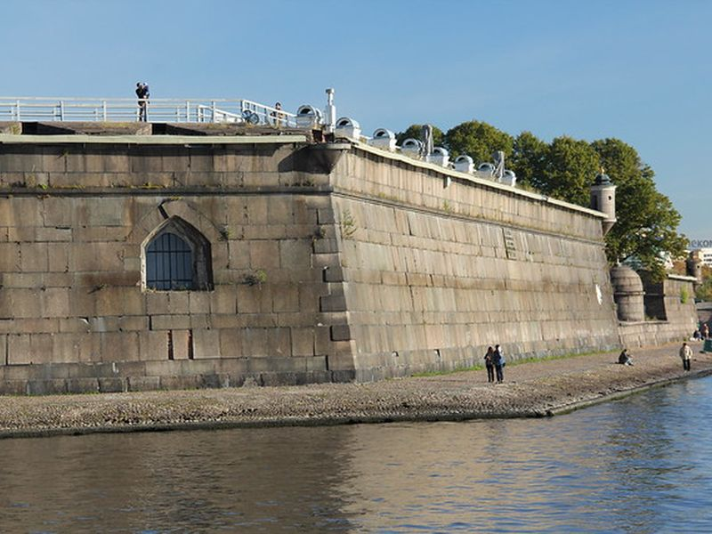
Peter and Paul Fortress
Peter and Paul Fortress is listed among principal sites for Saint Petersburg within Russia. Municipal and regional heritage listings document its place in the historic centre and travellers routes through Saint Petersburg. Peter and Paul Fortress is listed among principal sites for Saint Petersburg within Russia.
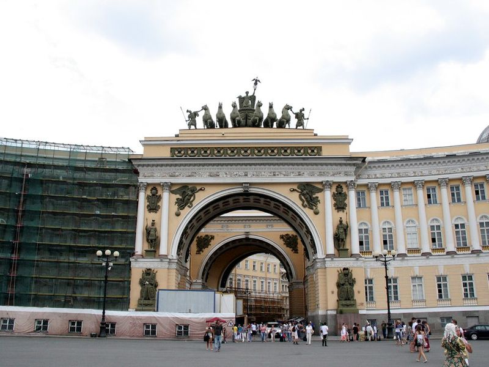
Palace Square
Palace Square is listed among principal sites for Saint Petersburg within Russia. Municipal and regional heritage listings document its place in the historic centre and travellers routes through Saint Petersburg. Palace Square is listed among principal sites for Saint Petersburg within Russia.
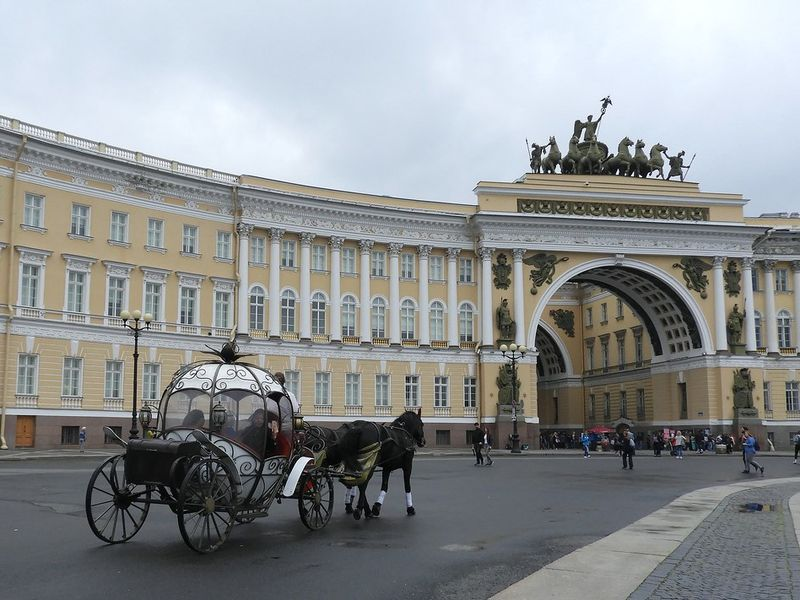
Winter Palace
Winter Palace is listed among principal sites for Saint Petersburg within Russia. Municipal and regional heritage listings document its place in the historic centre and travellers routes through Saint Petersburg. Winter Palace is listed among principal sites for Saint Petersburg within Russia.
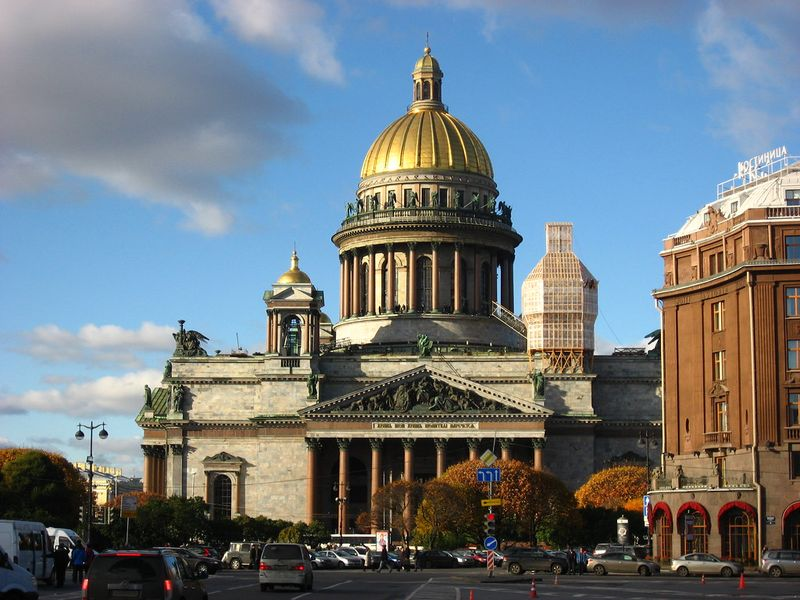
St. Isaac's Cathedral
St. Isaac's Cathedral is listed among principal sites for Saint Petersburg within Russia. Municipal and regional heritage listings document its place in the historic centre and travellers routes through Saint Petersburg. St. Isaac's Cathedral is listed among principal sites for Saint Petersburg within Russia.
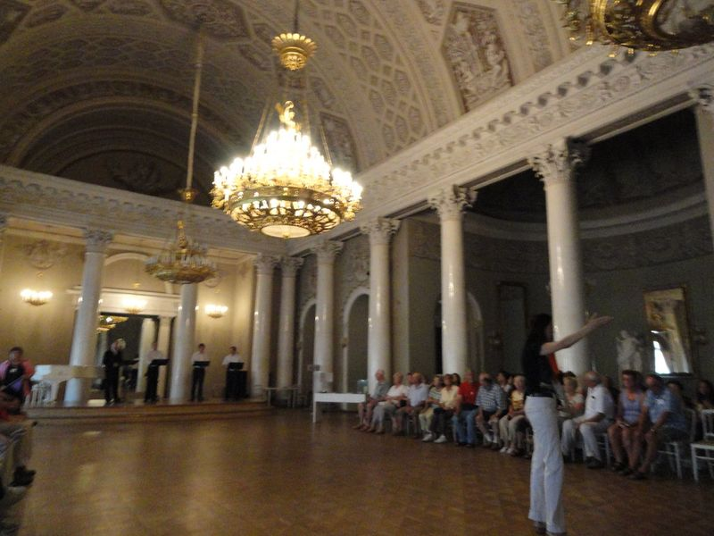
Yusupov Palace
Yusupov Palace is listed among principal sites for Saint Petersburg within Russia. Municipal and regional heritage listings document its place in the historic centre and travellers routes through Saint Petersburg. Yusupov Palace is listed among principal sites for Saint Petersburg within Russia.
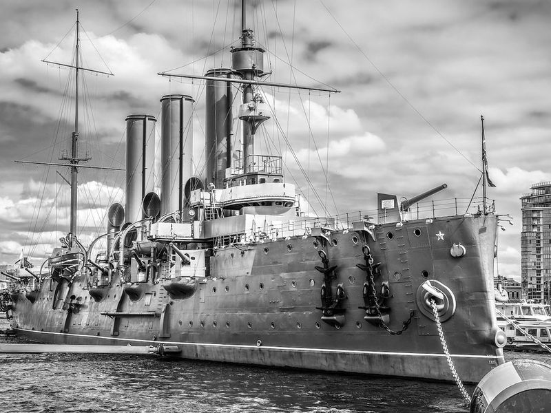
Cruiser Aurora
Cruiser Aurora is listed among principal sites for Saint Petersburg within Russia. Municipal and regional heritage listings document its place in the historic centre and travellers routes through Saint Petersburg. Cruiser Aurora is listed among principal sites for Saint Petersburg within Russia.
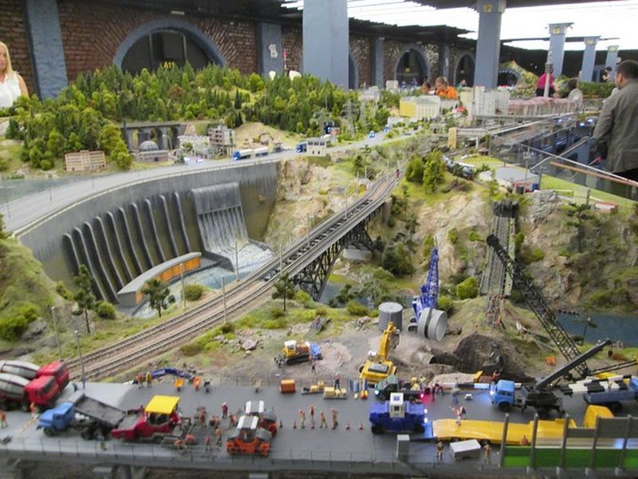
Grand Maket Russia
Grand Maket Russia is listed among principal sites for Saint Petersburg within Russia. Municipal and regional heritage listings document its place in the historic centre and travellers routes through Saint Petersburg. Grand Maket Russia is listed among principal sites for Saint Petersburg within Russia.
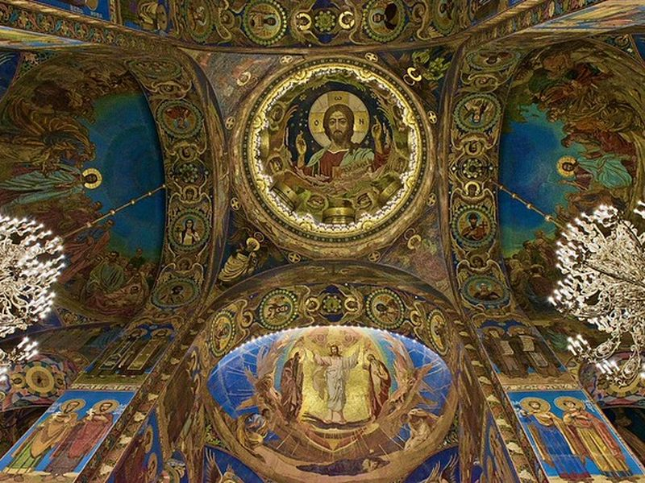
Savior on the Spilled Blood
Savior on the Spilled Blood is listed among principal sites for Saint Petersburg within Russia. Municipal and regional heritage listings document its place in the historic centre and travellers routes through Saint Petersburg. Savior on the Spilled Blood is listed among principal sites for Saint Petersburg within Russia.
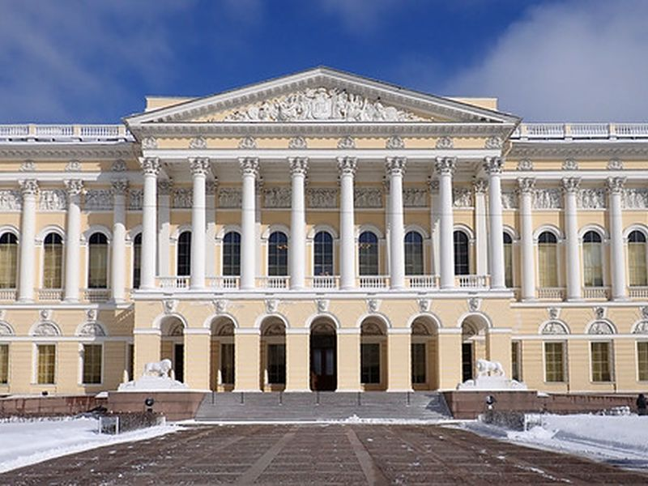
The State Russian Museum, Mikhailovsky Palace
The State Russian Museum, Mikhailovsky Palace is listed among principal sites for Saint Petersburg within Russia. Municipal and regional heritage listings document its place in the historic centre and travellers routes through Saint Petersburg. The State Russian Museum, Mikhailovsky Palace is listed among principal sites for Saint Petersburg within Russia.

Bol'shoy Sankt-Peterburgskiy Gosudarstvennyy Tsirk
Bol'shoy Sankt-Peterburgskiy Gosudarstvennyy Tsirk is listed among principal sites for Saint Petersburg within Russia. Municipal and regional heritage listings document its place in the historic centre and travellers routes through Saint Petersburg. Bol'shoy Sankt-Peterburgskiy Gosudarstvennyy Tsirk is listed among principal sites for Saint Petersburg within Russia.
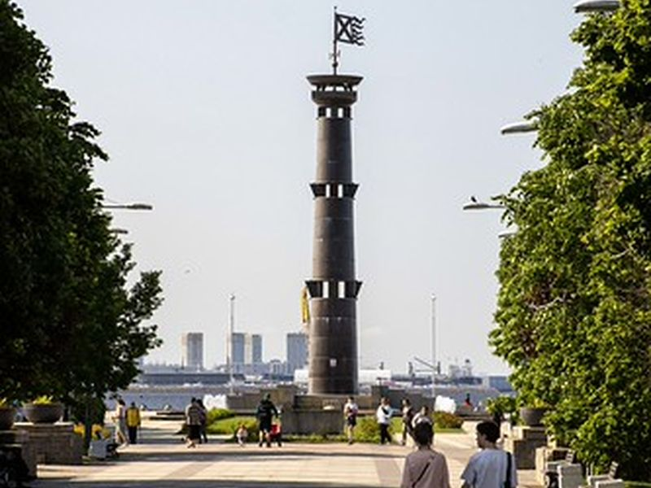
Park 300-Letiya Sankt-Peterburga
Park 300-Letiya Sankt-Peterburga is listed among principal sites for Saint Petersburg within Russia. Municipal and regional heritage listings document its place in the historic centre and travellers routes through Saint Petersburg. Park 300-Letiya Sankt-Peterburga is listed among principal sites for Saint Petersburg within Russia.
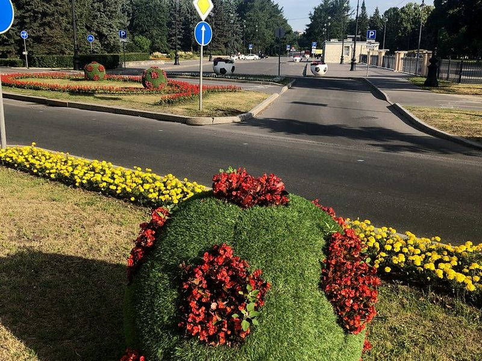
Primorskiy Park Pobedy
Primorskiy Park Pobedy is listed among principal sites for Saint Petersburg within Russia. Municipal and regional heritage listings document its place in the historic centre and travellers routes through Saint Petersburg. Primorskiy Park Pobedy is listed among principal sites for Saint Petersburg within Russia.
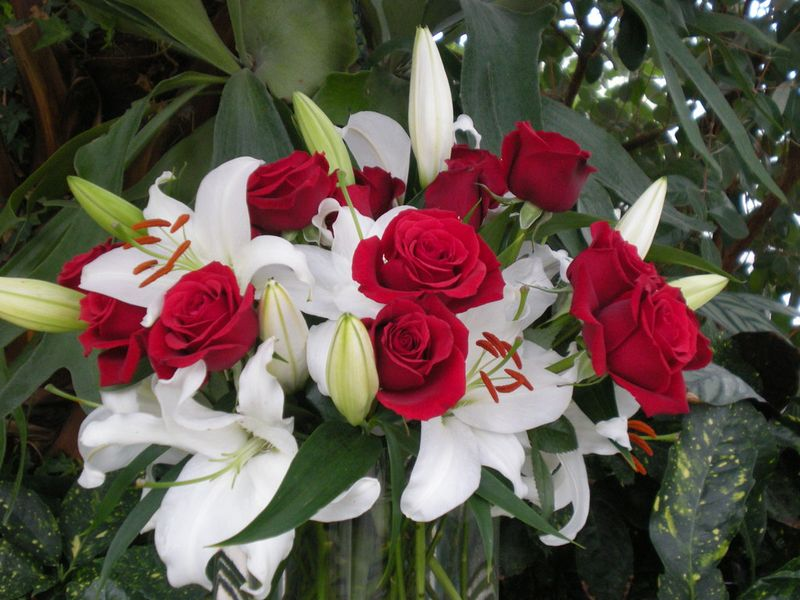
Greenhouse Tauride Gardens
Greenhouse Tauride Gardens is listed among principal sites for Saint Petersburg within Russia. Municipal and regional heritage listings document its place in the historic centre and travellers routes through Saint Petersburg. Greenhouse Tauride Gardens is listed among principal sites for Saint Petersburg within Russia.